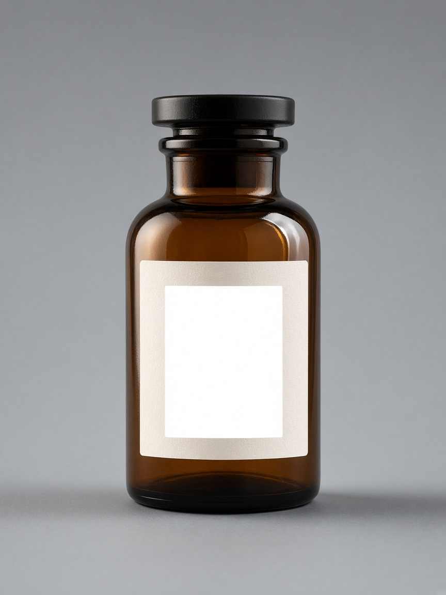

Product, warm ground

Selected
B
B wins. The bottle holds the left third, on the warm-neutral ground, with a quiet field left for the wordmark. One light, and the label keeps a tone.
A sits dead center on a cool gray that never falls off. The label clips toward white, and there is no open side for type. Only B follows the guide.